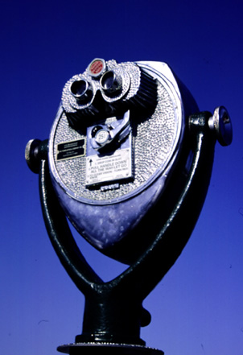

In the Distance. When you reach the end of the wharf, you come
to a restaurant, called Rappa's, with stairs on each side. After taking
the stairs on the right, you come to a platform with an awesome view of
the bay and the boats moored in the harbor. As you continue walking you
also encounter several "viewers" or binoculars. For .25 cents you can take
a closer look at the beaches across the bay, the seals on the jetty, the
boats in the harbor, the otters swimming around, and various other spectacular
views. What do you want to look at today? The photograph was originally
produced with late afternoon sun and a 35 mm camera using Provia slide
film, shutter speed 125, F13. Photo copyright Andrea L. Arredondo, May
11, 2000.
Updated by Andrea Arredondo
5/19/00